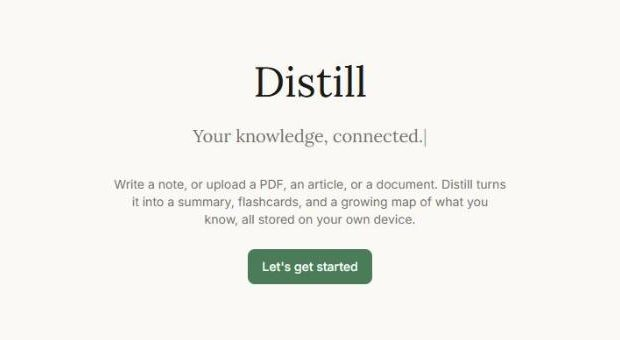
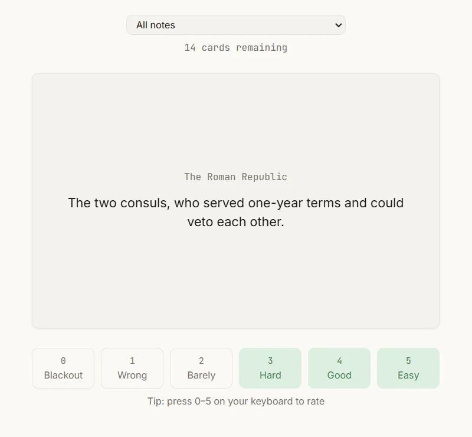
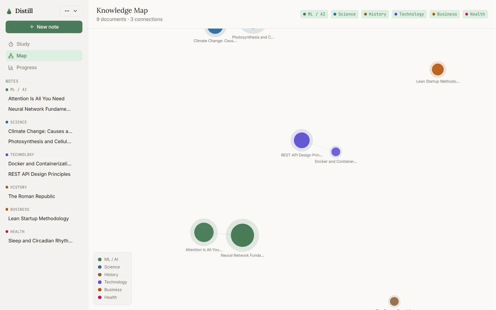
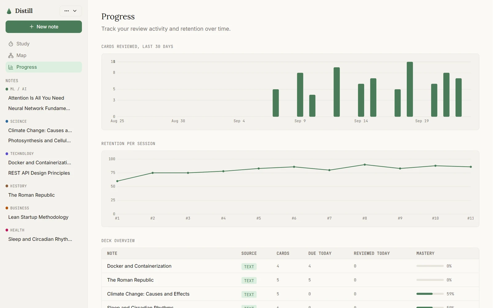

Scoping a product into a dissertation
Distill began as a real product idea for a universal problem: forgetting most of what you read within days. Testing recall on real people would have needed a full ethics application that didn't fit an MSc timeline, so I reframed the evaluation around usability, performance and correctness instead. A scope decision, argued and defended, not a workaround.

The mid-build redesign
The original plan was a conventional multi-page app, with a top nav routing between separate Upload, Cards, Study, Progress and Map pages. Partway through the build I decided that model fought against how someone actually works inside their notes, and redesigned the information architecture around a persistent sidebar and a writing canvas, closer to Notion. A deliberate call driven by how the app is used, not scope creep.


Evidence over instinct
A heuristic evaluation that found real problems
I evaluated all five core flows against Nielsen's ten heuristics and found 11 severity-rated issues, including a progress dashboard that showed a 71% "mastery" score for notes with no reviewed cards, and no way to delete a note at all. All 11 were fixed and re-checked in the running app.
Adversarial testing found a vulnerability
A separate pass trying to break the app with malformed and malicious input found a stored XSS hole: pasted rich content went into the page unsanitised. I fixed it with plain-text paste handling plus DOMPurify as a second layer, then proved it closed by reopening the "infected" note and confirming the payload no longer ran.
Both findings only showed up by using the running app under realistic and hostile conditions. Neither would have appeared in type-checking, linting or a quick click-through.


A design system that holds
Colour, spacing and type live as CSS custom properties. That mattered in practice: I found more than 44 places across 20 files quietly using raw hex values, which meant dark mode silently didn't reach large parts of the app until I migrated them file by file. Text size and reduced motion are real settings that can override the operating system's preference, not just mirror it.
Performance shaped the design
A Lighthouse pass showed the Progress page was the only one missing the performance target, because of a charting library too heavy to tree-shake: 110KB of gzipped JavaScript for two simple charts. I replaced it with a small SVG chart component, cutting that page's script weight by 98% and lifting its score from 85 to 92, with the charts checked side by side against the originals.
Measuring the AI, not just the interface
I built a ROUGE benchmark on a stratified corpus of 20 documents (three subjects, three lengths) to score the AI summaries against reference text, because "the AI feature works" needed a number behind it.
Stack and methods
- React 18
- TypeScript
- Vite
- Tailwind and CSS tokens
- Dexie and IndexedDB
- D3 force graph
- Claude API
- Nielsen heuristic evaluation
- Adversarial testing
- Lighthouse audit
- ROUGE benchmark